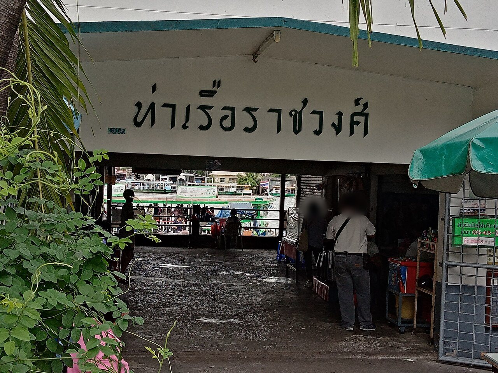

ถ้าวันนี้อยากแวะหลายที่ริมแม่น้ำ เช่น วัดอรุณ ท่ามหาราช ปากคลองตลาด แล้วจบที่ ICONSIAM เรือท่องเที่ยวธงฟ้าคือเรือที่ทำมาเพื่อวันแบบนี้ ซื้อตั๋วใบเดียว ขึ้นลงได้หลายท่าทั้งวัน มีคนบรรยายบนเรือ ราคาสูงกว่าเรือประจำทาง แต่ไม่ต้องคิดว่าจะขึ้นเรือธงสีไหน
| หัวข้อ | เรือท่องเที่ยวธงฟ้า | เรือด่วนเจ้าพระยา |
|---|---|---|
| ตั๋ว | ตั๋ววัน ขึ้นลงได้หลายครั้ง ราคาหลักร้อยบาท | จ่ายทีละเที่ยว หลักสิบบาท |
| ท่าที่จอด | เฉพาะท่าท่องเที่ยวหลัก | หลายท่า แยกตามสีธง |
| คำบรรยาย | มี | ไม่มี |
| เหมาะกับ | แวะ 3 ท่าขึ้นไปในวันเดียว | ไปจุดเดียวแล้วกลับ |
คุ้มเมื่อจะลงเรือ 3 ครั้งขึ้นไปในวันเดียว และอยากได้คำบรรยายระหว่างทาง ถ้าจะไปแค่วัดโพธิ์กับวัดอรุณ ใช้เรือข้ามฟากกับเรือด่วนถูกกว่ามาก ดูไกด์ 3 วัดทางเรือของเรา
ที่ช่องขายตั๋วของเรือท่องเที่ยวบนท่าที่เรือจอด ถามราคาตั๋ววัน ตั๋วช่วงเย็น และรอบสุดท้ายที่ช่องนั้นได้เลย
คุ้มเมื่อจะลงเรือ 3 ครั้งขึ้นไปในวันเดียวและอยากได้คำบรรยาย ถ้าไปจุดเดียวหรือสองจุด เรือข้ามฟากกับเรือด่วนถูกกว่ามาก
ปกติวิ่ง แต่ถ้าฝนหนักหรือคลื่นลมแรง เรืออาจปรับรอบ ถามที่ท่าก่อนซื้อตั๋ว หรือทักเราให้ช่วยดูแผนสำรองในร่ม
กดชื่อสถานที่เพื่อเปิดหมุดใน Google Maps — ใช้ชื่อภาษาอังกฤษแบบที่ Google ค้นเจอ
เปิดเส้นทางทั้งหมดจากที่พัก →* ราคาตั๋ว ท่าที่จอด และรอบเวลาของเรือท่องเที่ยวเปลี่ยนบ่อย และข้อมูลที่เผยแพร่อยู่ไม่ตรงกัน เราจึงไม่ใส่ราคาและตาราง ณ ก.ย. 2569 ดูป้ายที่ท่าก่อนซื้อตั๋วทุกครั้ง
เขียนโดยทีม House of Happiness · ปรับปรุงล่าสุด